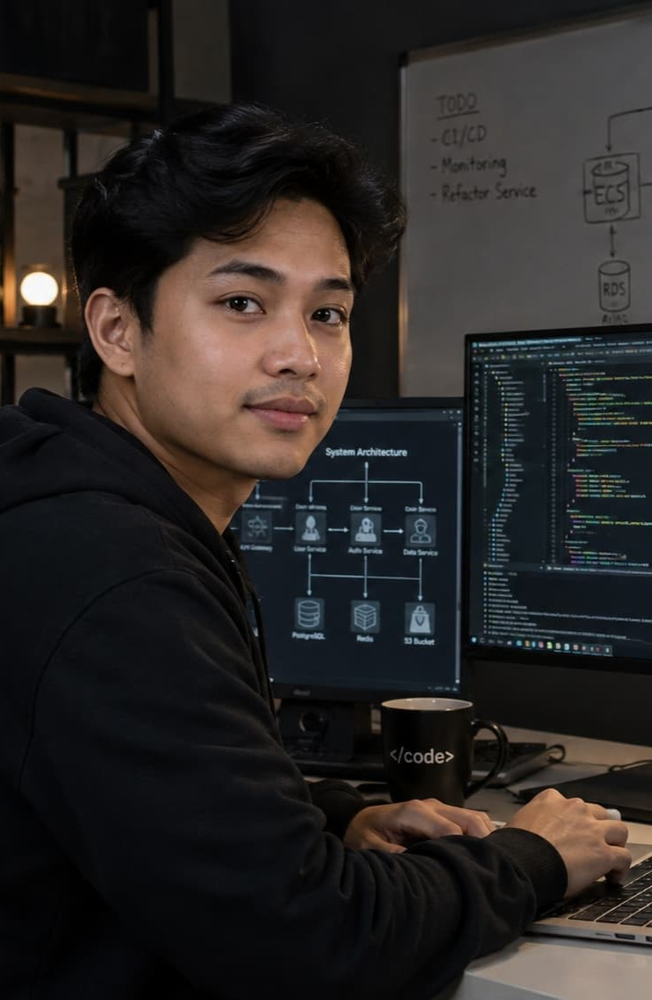

Lulusan Teknik Informatika Institut Teknologi Bandung (ITB) dengan 2 tahun pengalaman membangun sistem backend yang scalable untuk produk digital.

Saya lulusan S1 Teknik Informatika Institut Teknologi Bandung tahun 2022. Sejak semester akhir kuliah saya aktif magang sebagai backend developer, dan setelah lulus melanjutkan karier di bidang yang sama. Saya terbiasa bekerja dengan tim lintas fungsi menggunakan metodologi Agile, dan fokus pada penulisan kode yang bersih, teruji, dan mudah dirawat dalam jangka panjang.
IPK 3.62/4.00. Tugas akhir tentang optimasi query pada sistem basis data terdistribusi. Aktif sebagai asisten praktikum mata kuliah Struktur Data.
Mengembangkan dan memelihara layanan backend untuk platform pembayaran digital dengan lebih dari 500 ribu pengguna aktif bulanan. Menurunkan waktu respons API rata-rata sebesar 35% melalui optimasi caching.
Membangun sistem manajemen transaksi dan integrasi dengan payment gateway pihak ketiga menggunakan arsitektur microservices.
Membantu tim engineering membangun fitur internal dashboard analitik menggunakan Node.js dan React.
Merancang sistem antrian asinkron untuk memproses ribuan transaksi per menit tanpa kehilangan data.
Membangun dashboard real-time untuk memantau performa transaksi dan kesehatan sistem.